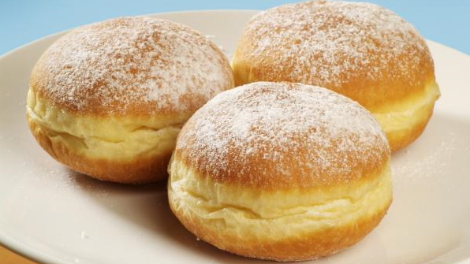

|  |
|
|
| ◄ | ► |
| Ter um diploma? Uma casa própria? Aaaa... o melhor sonho mesmo é o das nossas cozinhas! Sonho que nasceu na Prússia, em 1776, em meio à guerra, por um rapaz que foi afastado do batalhão pela falta de habilidade militar e, então, virou padeiro. |